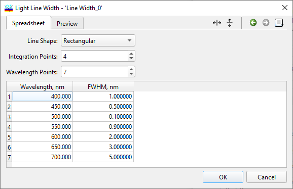
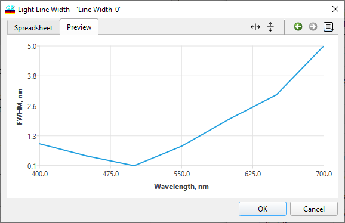

Line Width Database
Line Width Database
Navigation: OptiLayer Menu Commands > Data Menu >
Line Width Database
` <coneangledatabase.html>`__ ` <idh_menu_data.html>`__ ` <idh_edit_layer_material.html>`__
The Line Width database feature enables the storage of settings related to the width of instrumentation spectral lines. This width may vary depending on the wavelength.

In the Line Shape feature, users can choose between Rectangular or Gaussian shapes for the spectral line. The Integration points parameter specifies the number of points utilized during the evaluation of integrals that depict the impact of a finite line width. Increasing the number of Integration points enhances accuracy but also extends computational time, which scales proportionally with this value. Typically, Integration points values range from 5 to 15 for optimal performance. Within the Wavelength points section and corresponding spreadsheet below, users can define the dependency of the spectral line width on wavelength. The spectral line width is specified by Full-Width-at-Half-Maximum (FWHM) values as a function of wavelength. Piece-wise linear interpolation is employed to represent values between the specified wavelength points, while extrapolation is achieved using a constant value for wavelengths outside the specified range.

The “Preview” tab displays the specified dependency in a graphical format, allowing users to visualize the relationship between spectral line width and wavelength.

Note: Loading an item from the Line Width database will result in all evaluation and design computations being conducted while considering the line width settings specified in the database.